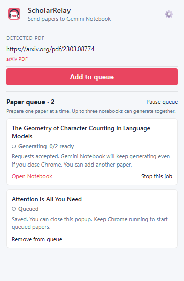

Choose once
Select artifact types, formats, language, style, and optional instructions.
 Scholar Relay
Scholar Relay
Gemini Notebook workflow automation
Save your preferred setup once. Apply it to PDFs, arXiv papers, and webpages, then let Scholar Relay create each notebook and request the study materials you selected.
REAL EXTENSION UI


Select artifact types, formats, language, style, and optional instructions.
Add PDFs, arXiv papers, and webpages. Each item gets its own notebook.
Scholar Relay imports each source and requests your saved set of study materials.
WHAT YOU CAN CREATE
Turn each paper into the formats you actually use. Save the selection once, then adjust individual prompts whenever a paper needs special attention.
Scholar Relay creates a clearly named Gemini Notebook, imports the source, and keeps the generated materials together.
Save up to 20 papers. Close the popup after saving and let up to three notebooks generate at the same time.
Follow progress from the extension, then open the finished notebook and its study materials directly in Gemini Notebook.
BUILD A REPEATABLE STUDY SYSTEM